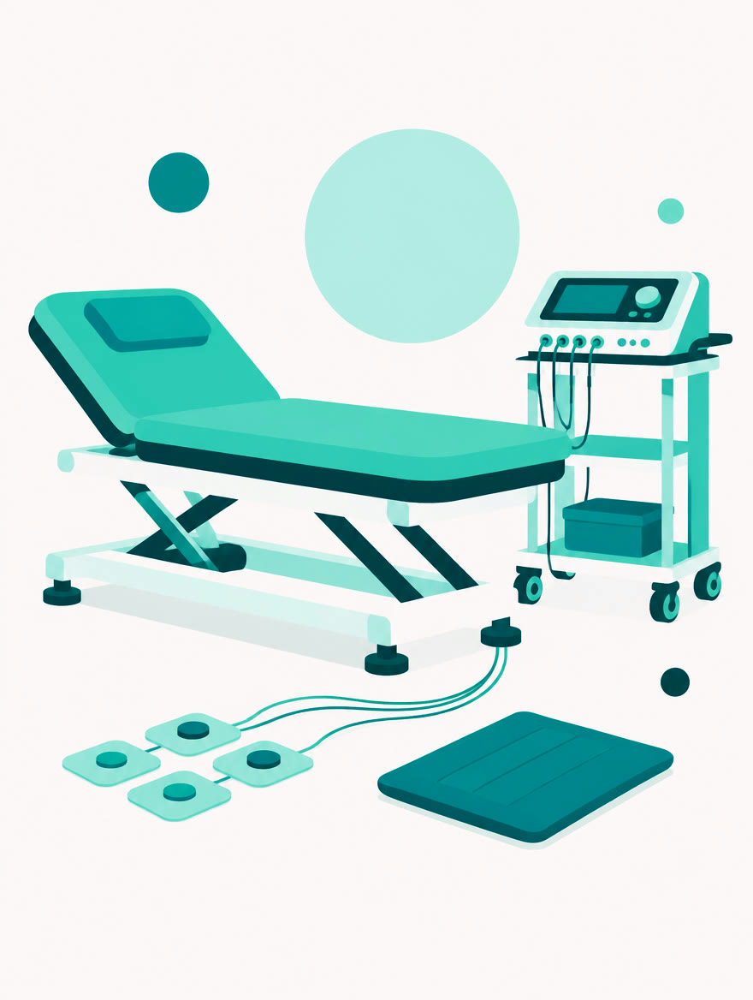

숫자를 늘어놓는 데서 끝나지 않습니다. 무엇이 달라졌는지, 왜 그런지, 다음 달 무엇을 봐야 하는지 말로 정리합니다.
모든 문장에 어떤 숫자를 보고 말했는지 붙입니다.
원인을 짐작할 때는 추정이라고 분명히 밝힙니다.
리포트를 보다가 궁금한 점을 바로 물어봅니다.
AI에는 합계 숫자만 보내고, 채팅 기록은 저장하지 않습니다.
척추·관절 환자 흐름, 도수·물리치료 처방, 치료사 생산성까지. 정형외과에서 매일 보는 숫자에 맞췄습니다.

EMR에서 내려받은 통계 파일을 올리면 신환율·재진율, 7일·14일 재방문, 처방 그룹별 환자 수가 바로 계산됩니다.
직원별 인센티브 규칙을 한 번 정해 두면, 월 실적으로 급여를 계산하고 확정합니다. 세무사 전달표와 인건비율·치료사 생산성도 함께 나옵니다.
매출 흐름을 보고, 재고가 떨어지면 대시보드에 발주 알림을 띄웁니다.
일일마감, 일일보고, 월말보고를 정해진 양식에 맞춰 빠르게 씁니다.
월말보고·통계 그래프·AI 분석을 한 장에 모아 PDF로 저장합니다.
환자 이름·주민번호·차트번호는 서버에도, AI에도 가지 않습니다. 처음부터 그렇게 설계했습니다.
환자 파일을 여기서만 열고 계산합니다.
통계·매출 합계만 저장합니다. 원본 파일은 올라가지 않습니다.
서버가 꺼낸 합계 숫자로만 리포트를 씁니다.
계산에 쓰는 칸을 정해 두고 그 칸만 읽습니다. 차트번호는 계산하는 동안 메모리 안에서만 씁니다.
'-' 없이 붙여 쓴 13자리까지 잡아서,
섞여 있으면 계산하지 않고 알려 줍니다.
통계·매출 합계와 인건비 총액만 보냅니다. 직원 이름·개인별 급여도 보내지 않습니다.
구글 로그인 뒤 관리자가 승인한 계정만 들어옵니다. 30분 동안 움직임이 없으면 자동으로 로그아웃합니다.
쓰던 구글 계정으로 로그인합니다. 새 비밀번호를 만들 필요가 없습니다.
처음 한 번만 의원 이름을 적어 신청합니다.
관리자가 승인하면 대시보드가 열립니다.